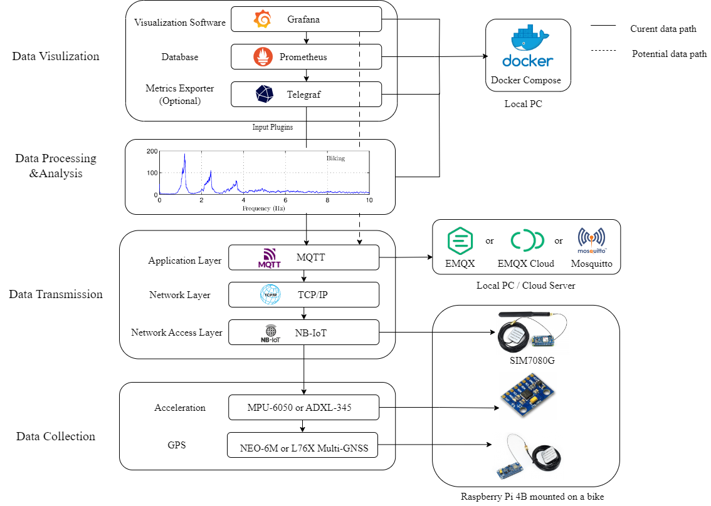

|
Reseach Projects
|
 |
Yuzhou Tong, supervised by Kiran Bacsa and Prof.Eleni Chatzi
Singapore-ETH Center, Future Resilient Systems
DMPS utilizes mobile sensor for dynamic infrastructure assessment.
The approach is real-time, reactive, and cost-efficient.
The data collected goes toward the elaboration of a digital twin.
[Slides] [Manual] [Code]
|
|